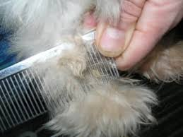

Brushing teeth can be fun, but it can also be challening. Your pup may give you a little bit of a hard time. However once they get used to it, you be able to brush your baby's teeth with ease. Just apply a dime sized amount of toothpaste on the toothbrush. Lift the side of your dogs mouth to expose the teeth. Slip the toothbrush inside and hold your pups mouth closed while brushing teth in a circular motion.
Sometimes we can try and try to brush teeth but it just wont work. Dont worry! Pet stores carry water additives that fight against tarter, plaque and bad breath. But Teeh brushing always works best.

Combing and brushing your pet everyday is very important. Making this part of your daily routine will ensure that your pets fur will not have matts. What are matts?? Well, to make a long story short, “Matting” refers to densely tangled clumps of fur in a pet's coat. If a coat is not properly and/or frequently brushed, loose and live hair become embedded in large masses. Sometimes mats can be combed out, but if left too long, it is impossible without seriously harming the animal. Say NO TO MATTING!!

Washing you pets face will help the face stay fresh and clean. This also helps with tear staining. Wiping your dogs eyes on a daily basis will help keep the eyes looking bright